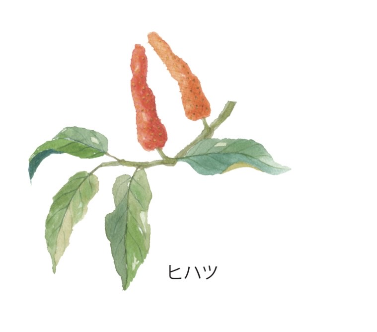

健康的な毎日をKALCALAと一緒に
お腹の脂肪、むくみ、冷えなど、様々なお悩みにアプローチ
3つの機能性関与成分

ブラックジンジャー由来ポリメトキシフラボン
BMIが高めの方の脂肪燃焼をサポート
お腹周りの脂肪を効率的に減少 ※BMI高めの方
基礎代謝の向上をサポート

ヒハツ由来ピペリン
夕方の脚のむくみを軽減
末梢血流量を増加させる
冷えの軽減をサポート ※冷えによる末梢(手)の皮膚表面温度の低下
※病的ではない一過性のむくみ
現役医師による推奨
92.9%の医師が継続を勧めたい
科学的根拠に基づいた成分配合
安全性と効果の両立を実現
株式会社サン・クラルテ製薬の「KALCALA」について、医師56名を対象としたアンケートを実施しました。その結果、「KALCALAを続けることをおすすめしますか？」という質問に対し、92.9％（56名中52名）が勧めたい（前述の質問に対し、とてもそう思う、そう思う、ややそう思うと回答した医師の割合）と回答しております。（2023年11～12月：Dr's Review事務局調べ）※なお、本アンケートは商品使用者個人の感想であり、効果効能を保証/標榜するものではありません。
KALCALAで期待できる効果

こんなお悩みありませんか？
夕方になると脚がパンパン
靴下の跡がくっきり残る
お腹周りの脂肪が気になる
手足の冷えがつらい
KALCALA
機能性関与成分配合

KALCALAでサポート
✓
夕方の脚のむくみを軽減
✓
お腹の脂肪を減らすのを助ける ※BMI高めの方
✓
末梢血流量を増加
✓
冷えの軽減をサポート ※冷えによる末梢(手)の皮膚表面温度の低下
科学的根拠に基づく効果
-17cm²
脂肪減少
ブラックジンジャー由来成分による
44%
むくみ軽減
ヒハツ由来ピペリンによる
※BMI高めの方。関与成分の効果 ※病的ではない一過性のむくみ ※非摂取群の変化量に対する摂取群の変化量の割合から算出 ※個人差があります
今なら初回特別価格
500円
（税込・送料無料）
初回のみ約83％OFF
2回目以降も約23％OFF
30日間全額返金保証付き